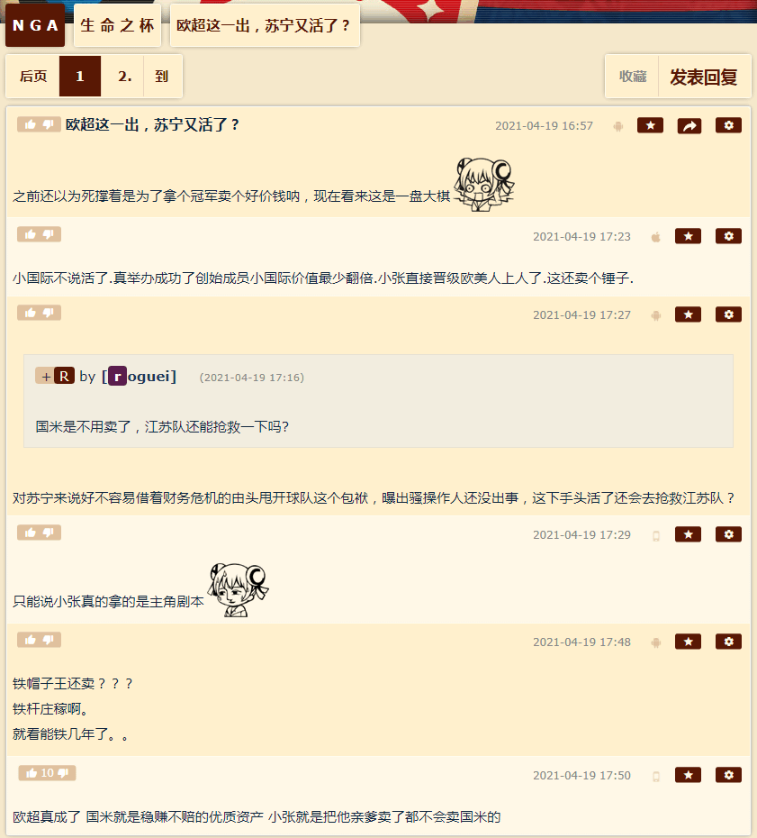

简单说，今天到现在的风向，无论是曰若稽古还是如是我闻，都是指桑骂槐，不加解读的字面直译应该是这样的：
胡亥正在赵高的协助下冚家富贵，章邯正在武汉平叛剿匪，赵佗正在广州亲切接见香港朋友探讨广东省旗省徽设计方案，萧何正在走私贩毒，张良正在南京长江大桥上下来回奔走忙着捡破鞋闻臭脚①……刘邦正在宿迁明尼苏达玩女大学生，并走通人脉篡改扫黑除恶卷宗，把最好玩的吕雉她们家亲戚的案底都扣到项羽头上。
- ①
简单说，今天到现在的风向，无论是曰若稽古还是如是我闻，都是指桑骂槐，不加解读的字面直译应该是这样的：
胡亥正在赵高的协助下冚家富贵，章邯正在武汉平叛剿匪，赵佗正在广州亲切接见香港朋友探讨广东省旗省徽设计方案，萧何正在走私贩毒，张良正在南京长江大桥上下来回奔走忙着捡破鞋闻臭脚①……刘邦正在宿迁明尼苏达玩女大学生，并走通人脉篡改扫黑除恶卷宗，把最好玩的吕雉她们家亲戚的案底都扣到项羽头上。
2021-04-19 19:36:22